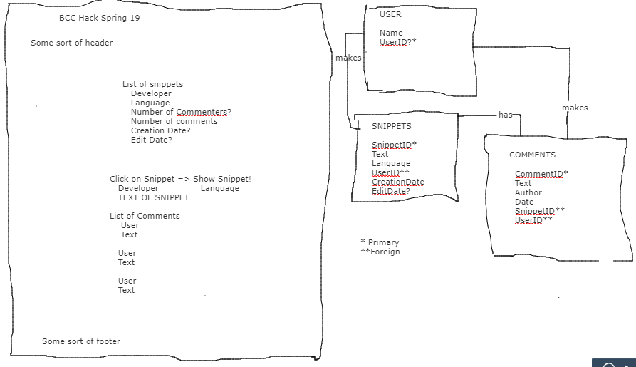
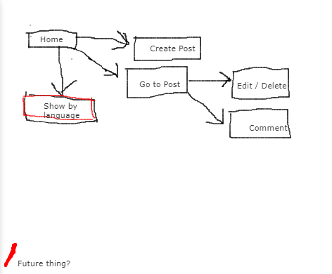

I've been in the Metro Denver area for long enough I think I can call myself a native. It's the longest I've lived anywhere what with being an Air Force Brat and all.
I like to #bulletjournal, #doodle, play #tabletopgames and #mobilegames.
My resume is here.
March 30, 2019
Today I went to my first ever hackathon. For the longest time I thought only "real" coders did hackathons and that there was "as-seen-in-the-movies" hacking going on. Which I don't do.
In the summer of 2018 I went to my second ever tech conference, DVLPDNVR. After seeing what the teams came up with at the hackathon, I realized
- no one does what the hackers do in the moves
- I could at least help on the front end.
We started by filling out a survey as to what language we most wanted to use. React, node, Vue, Ruby. I have zero experience with any of them, but React is so hot right now...
Teamed up, with an idea of what we were working toward, at first I felt lost and unable to help. Lots of words. Lots of techs. Did I mention I has just gotten my laptop the night before because I was meaning to get one for a long time to take to meetups and conferences and such? No. Well, that happened.
At the moment, I had Chrome, GitHub Desktop, Sublime Text, and because it was recommended, node.js.
We were given some user stories. We brainstormed ideas. We brainstormed ways to build the thing. We found tools online to help the planning process: online whiteboards and list-making apps. We decided on our stack.
I started by scribbling. Then using the web whiteboard.
 I am of the opinion that my data modeling skill is one of my strongest. UI/UX Development - needs work.
I got to put together two pages with working nav and use bootstrap to make them look a bit better than plain text. My teammates refactored it into React. With React? Something something React.
And somewhere along the way the backend went from a relational database to a not relational database. I think my teammates had fun with that.